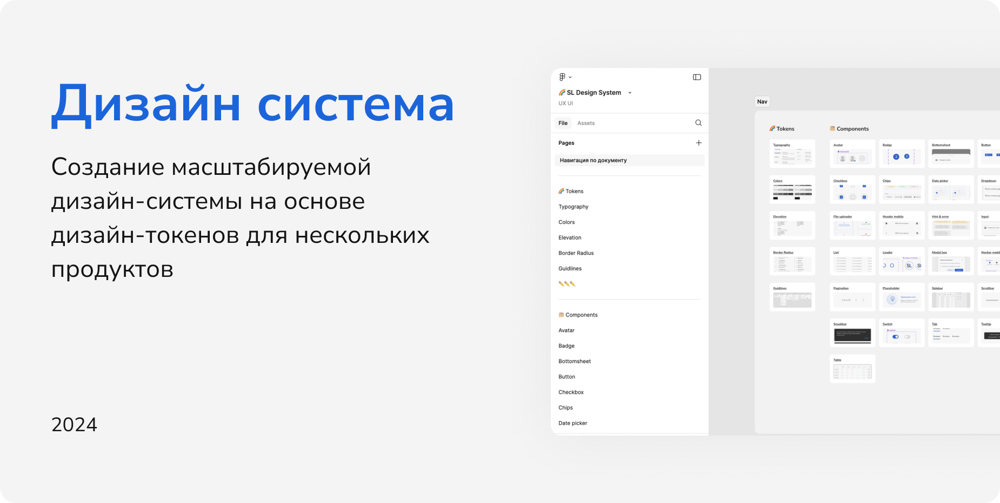
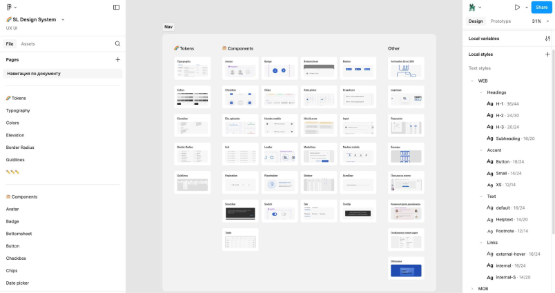
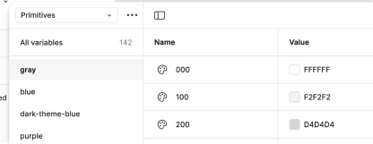
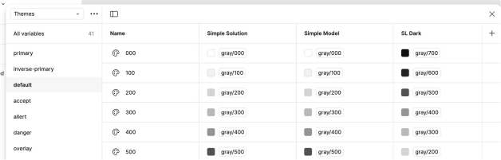
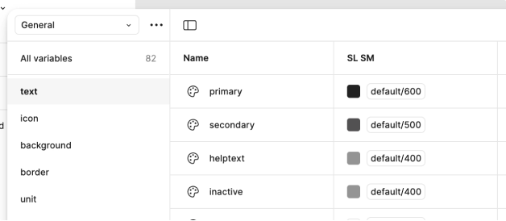
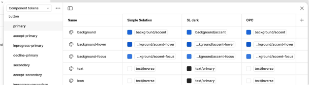
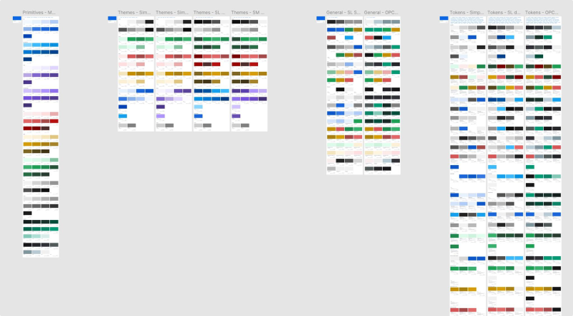
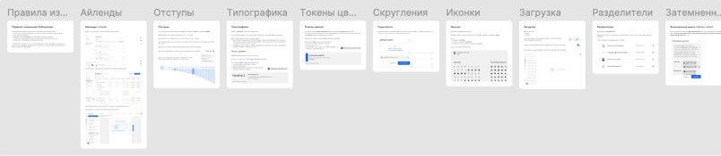
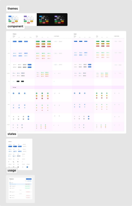

Дизайн система
Создание масштабируемой дизайн-системы на основе дизайн-токенов для нескольких продуктов
Введение
В компании, где я работаю, со временем стало появляться множество продуктов, в которых использовался мой базовый UI Kit. С увеличением количества продуктов встал вопрос стандартизации и упрощения работы над интерфейсами.
Параллельно команда фронтенда начала переход к своей дизайн-системе, и возникла идея связать стили в интерфейсах с фигмой через API с использованием дизайн-токенов. Это был мой первый опыт работы с таким подходом, и он меня заинтересовал. Я изучила доступные материалы, включая статьи на Хабре и тематические лекции, чтобы погрузиться в тему. Работа над токенами постепенно превратилась в создание полноценной дизайн-системы, включающей компоненты, гайдлайны и стили. В процессе я систематизировала все элементы для удобства команды.

Процесс
Создание системы дизайн-токенов
Я начала с определения минимальных единиц дизайна — дизайн-токенов. Они стали основой для построения гибкой и масштабируемой дизайн-системы. Для этого я выделила четыре библиотеки:
Primitives — абсолютные значения:
- Включает все цвета, используемые во всех продуктах и темах.
- Цвета названы нейтрально (например, blue, purple, gray).
- Без разделения на моды (темы).

Themes — тематические значения:
- Используют ссылки на библиотеку Primitives.
- Появляются моды (например, тема для продукта A, тёмная тема для продукта B).
- Цвета приобретают семантику (например, primary, secondary).

General — стандартные значения:
- Ссылаются исключительно на библиотеку Themes.
- Включают стандартные цвета текста, фона и других элементов.
- Не привязаны к конкретным компонентам, но используются для проектирования макетов.

Components — значения для компонентов:
- Содержат токены, описывающие конкретные элементы интерфейса (например, button/primary/background).
- Для каждого состояния компонента (hover, active) есть отдельные токены.
- Поддерживают моды для нюансной настройки дизайна.
Такой подход позволяет гибко настраивать отображение тем и обновлять их буквально парой кликов. Помимо цветов, в библиотеки добавлены числовые значения для настройки border-radius, elevation и расстояний.


Формализация правил и организация работы
Для упрощения работы команды я создала вкладку с гайдлайнами, где описала основные правила:
- Все элементы должны быть занесены в компоненты.
- Повторяющиеся элементы из разных модулей размещаются в файл дизайн-системы.
- Все компоненты систематизированы по алфавиту (от отделения на атомы и молекулы пришлось отказаться).
- Стили компонентов выгружаются в JSON-файл для использования на фронтенде.
На каждой странице с компонентами я добавила примеры их использования в интерфейсе, состояния и вариации в разных темах.


Результат
Созданная мной дизайн-система:
- Стандартизировала работу над интерфейсами в продуктах компании, которые я создавала и курировала.
- Упростила процесс внесения изменений в тему и стили продуктов, особенно при обновлении нескольких интерфейсов одновременно.
- Сделала макеты более последовательными и удобными, что увеличило скорость согласования дизайнов между командами.
Система продолжает развиваться и детализироваться. Она остаётся важным инструментом как для дизайнеров, так и для фронтенд-разработчиков.